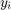

Contents
L1 optimization with linear programming
Example: Given the Anscombes-quartet data points x and y, find a polynomial model that is optimal in an L1 sense.
Data: and ,
Polynomial model:
Find q such that is minimized
Let's transform this task to a linear programming problem:
Instead of minimising , we minimise
subjected to
which is the same as minimising
subjected to and
rearranging the constraints, the minimisation is subjected to
and
Introducing the variable
the task is to compute
subjected to
This problem then can be written in the form
subjected to
with
,
and
for model_i = 1:4
% load Anscombes-quartet data
[x,y] = anscombes_quartet(model_i);
m = length(x);
compute the linear regression model
% max degree of polynomial basis n=1; % linear regression % evaluate monomials at the 'x' data points A = poly_matrix(x, n); % number of approximating functions N = size(A, 2); % reformulate to linear programing task f = [zeros(N, 1); ones(m,1)]; A_l = [A, -eye(m);-A, -eye(m)]; y_l = [y; -y]; z_opt = linprog(f, A_l, y_l); q = z_opt(1:N); % plot the regression model xs= sort(x); % plot data figure plot(x,y, 'x', 'LineWidth', 2) hold on plot(xs, polyval(q,xs), 'lineWidth', 2) % squared error of the regression model ss_res = sum((y - polyval(q,x)).^2) % L1 norm of the regression model L1_res = sum(abs(y - polyval(q,x)))
Optimal solution found.
ss_res =
13.8455
L1_res =
9.1500
Optimal solution found. ss_res = 13.9596 L1_res = 10.2600
Optimal solution found.
ss_res =
18.0201
L1_res =
4.2650
Optimal solution found.
ss_res =
13.7577
L1_res =
9.9300
compute quadratic regression model
max degree of polynomial basis
n=2; % linear regression % evaluate monomials at the 'x' data points A = poly_matrix(x, n); % number of approximating functions N = size(A, 2); % reformulate to linear programing task f = [zeros(N, 1); ones(m,1)]; A_l = [A, -eye(m);-A, -eye(m)]; y_l = [y; -y]; z_opt = linprog(f, A_l, y_l); q = z_opt(1:N); % plot the regression model xs= sort(x); % plot data figure plot(x,y, 'x', 'LineWidth', 2) hold on plot(xs, polyval(q,xs), 'lineWidth', 2) % squared error of the regression model ss_res = sum((y - polyval(q,x)).^2) % L1 norm of the regression model L1_res = sum(abs(y - polyval(q,x)))
Optimal solution found.
ss_res =
13.6150
L1_res =
9.0525
Optimal solution found.
ss_res =
3.3333e-05
L1_res =
0.0100
Optimal solution found.
ss_res =
18.0201
L1_res =
4.2650
Optimal solution found.
ss_res =
13.7577
L1_res =
9.9300
end